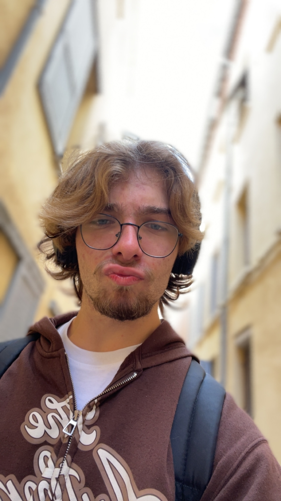

qui_suis_je.html
< p >Je m'appelle Elouan GAÏOTTO, Racloody, c'est mon pseudonyme. Je suis étudiant en BTS Services Informatiques aux Organisations au Lycée Pardailhan à Auch. Je suis passionné par l'informatique dont maintenance, développement (Python, HTML/CSS) et infrastructure (J'ai eu mon serveur web personnel), la création musicale et visuelle, j'ai exposé certaines de mes réalisations sur mon portfolio. </ p >
mon_parcours.md
J'ai été au collège Édouard Lartet à Gimont où j'ai fait deux stages qui m'ont fait découvrir les métiers de la création et de la diffusion artistique : Un chez un ingénieur du son avec le recâblage d'un studio et l'autre au sein d'une station radio locale
Lycée
J'ai été au Lycée général et technologique Pardailhan à Auch. J'ai fait un bac général où j'ai suivi les spécialités Mathématiques, NSI et Espagnol en terminale.
J'ai participé à un atelier informatique. Au lycée, j'ai également fait partie du club de musique (apprentissage de la guitare et outils de sonorisation) et du théâtre, ce qui m'a permis de voir que j'aimais être sur scène autant que derrière.
Etudes Supérieures
De septembre 2025 à Novembre 2025, j'ai été à la fac UT2J où j'ai fait LLCE Anglais et mineure espagnol. J'ai arrêté car ça ne correspondait pas à mes projets professionnels.
En septembre 2026, je commence un BTS SIO (Services Informatiques aux Organisations) au lycée Pardailhan à Auch.
Du collège jusqu'à maintenant, j'ai fait de la maintenance informatique chez mes proches et du reconditionnement de téléphones et de PC.
mes_logiciels(1).psd

VS Code
VS Code m’est utile afin de coder en html, css et python, je m’en suis servi pour faire ce site.

Adobe Photoshop
Je l’utilise pour du montage photo et pour faire des maquettes de site web comme celui-ci ou des maquettes de logiciels.

Adobe Illustrator
J’en fais usage pour concevoir des logos, et des chartes graphiques trouvables dans mon portfolio.

FL Studio
Je l’utilise pour créer, produire et mixer mes morceaux de musique.

Canva
Je l’utilise pour faire des affiches ou des présentations.
elouan.png

mes_reseaux.pdf